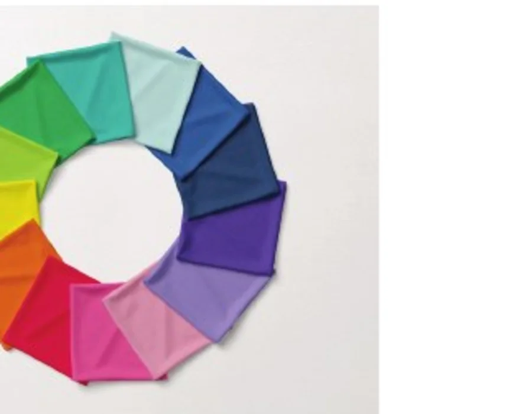
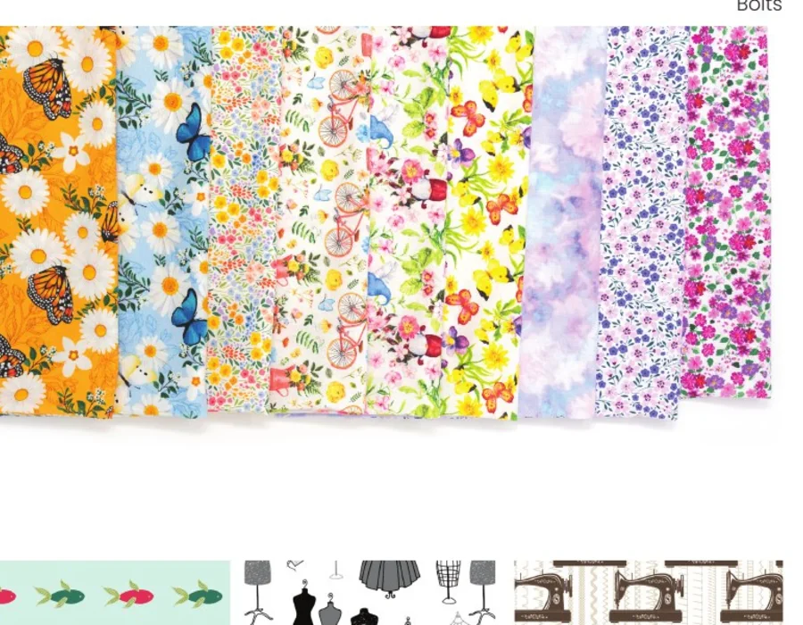
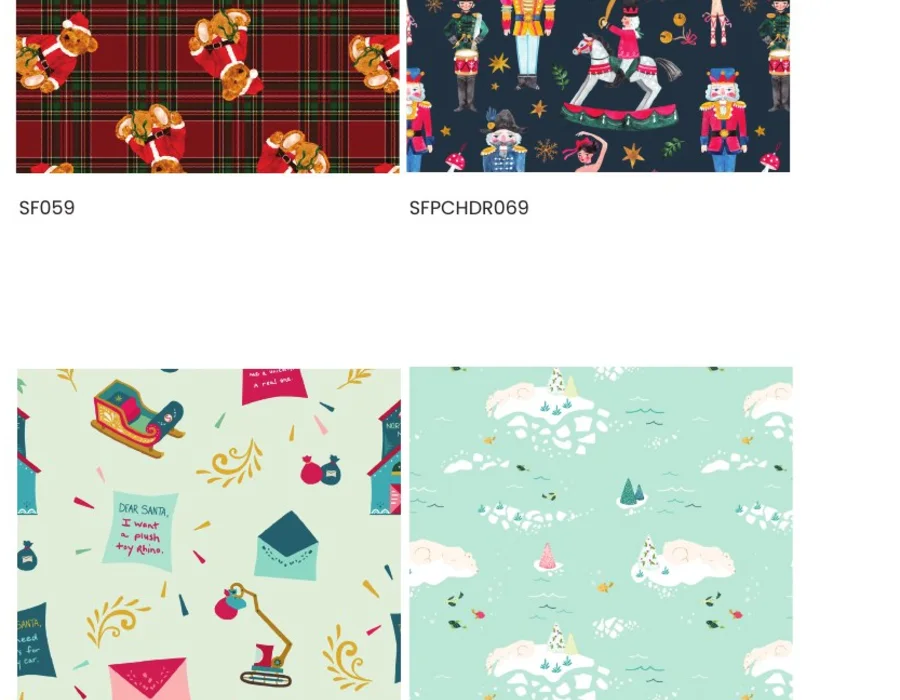

Presented For Global Sewing Summit
Original Fabrics.Endless Possibilities.
Discover SINGER® Fabrics through a curated assortment of premium solids, handmade batiks, everyday prints and seasonal stories created for inspired sewing.
Nashville, Tennessee
Global Sewing Summit
Explore the collection and connect with our sales team during the event.
From The First Stitch Forward
Fabric With A Creative Legacy
For 175 years, SINGER has helped generations take their first stitch and bring original ideas to life. SINGER Fabrics carries that creative legacy forward with thoughtfully curated colors, prints and project possibilities.
100%Premium cotton across core collections
44 inVersatile quilting and sewing width
4Distinct collection stories
175Years of SINGER creativity
Curated For Creative Retail
Explore The Collections
Each collection offers a distinct merchandising story while remaining connected through trusted quality, expressive color and practical sewing performance.



Wholesale Process
How To Order
A clear business process designed to move from product discovery to pricing, availability and fulfillment support.
Browse
Review complete collections and note the designs or product groups that fit your business.
Select
Share the collection names and SKUs that interest you.
Connect
Our sales team will provide current availability, pricing and applicable order requirements.
Confirm
Finalize the assortment, quantities, delivery details and commercial terms with sales.